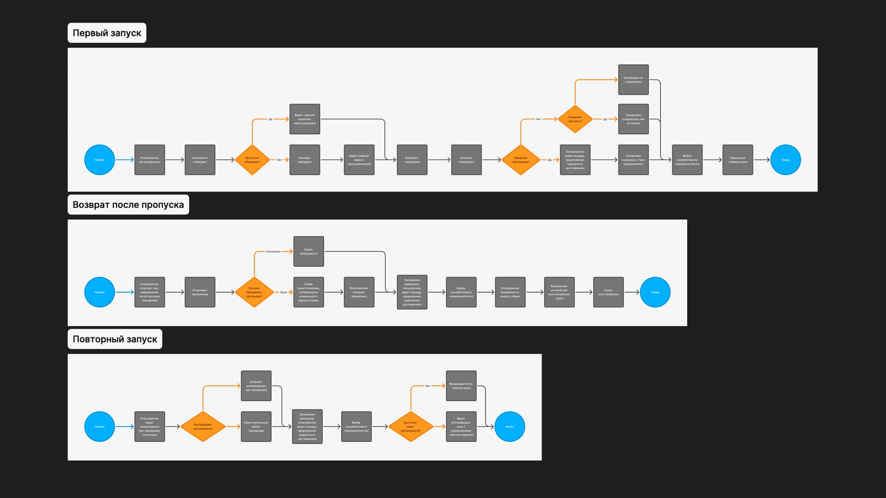
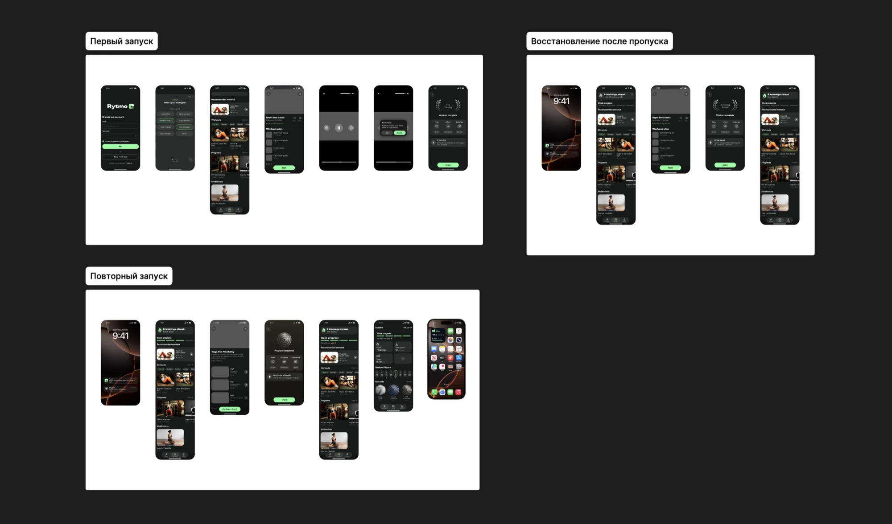

{{ project.title }}
{{ project.role }}
{{ project.duration }}
↗ {{ t.openFigma }}{{ t.problemHeading }}
{{ problemText }}
{{ t.hypothesisLabel }} {{ hypothesisText }}
{{ t.summaryHeading }}
{{ summaryText }}
{{ t.processHeading }}
{{ step.num }}
{{ step.label }}
{{ step.desc }}
{{ t.competitorsHeading }}
{{ competitorsText }}
{{ t.interviewsHeading }}
{{ interviewsMethod }}
{{ t.keyFindingsLabel }} {{ interviewsFindings }}
{{ t.jtbdHeading }}
{{ t.jtbdIntro }}
JTBD{{ t.hypothesisCol }}ICE
{{ row.jtbd }}
{{ row.hypothesis }}
{{ row.ice }}
{{ t.flowHeading }}
{{ flow.title }}
{{ flow.goal }}
{{ flow.steps }}

{{ t.screensHeading }}

{{ screen.title }}
{{ screen.text }}
{{ t.resultsHeading }}
{{ t.designedLabel }} {{ results.designed }}
{{ t.metricsLabel }} {{ results.next }}